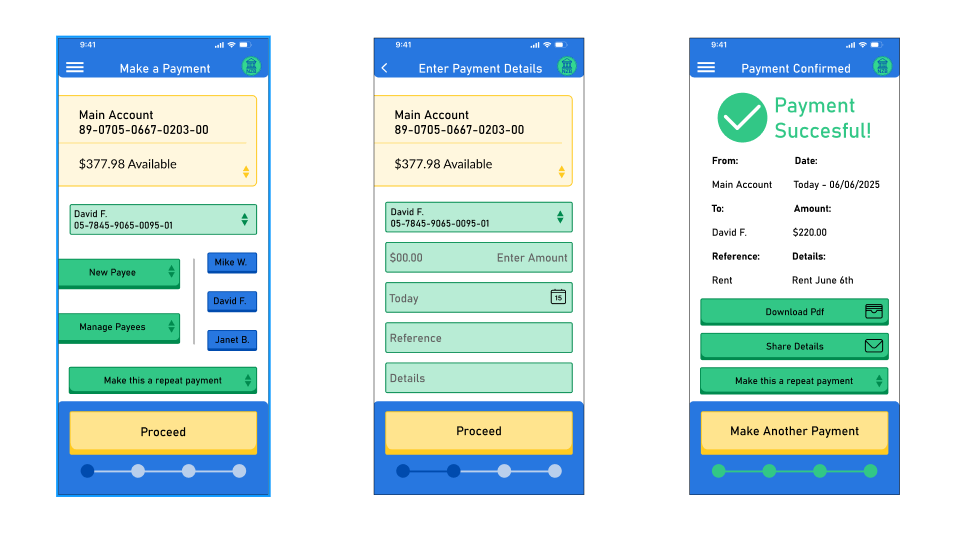
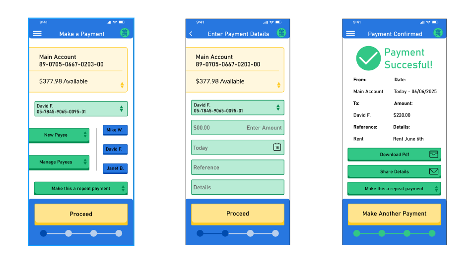

Groundwater Infographics
For this project, I was tasked with designing and prototyping a new online payment process for a banking app. The goal was to improve usability, accessibility, and the overall user experience while keeping the process simple and efficient.
I began with UI research, analyzing the ANZ mobile and desktop banking apps to identify strengths and weaknesses. Common issues included small text, unclear navigation, and inefficient ways to manage payees. I then conducted a UX survey with eight participants, gathering insights into what users valued most—such as speed, predictability, and clear confirmation—along with areas where existing apps fell short, like friendliness and creativity.
Based on these findings, I created user personas (including one with visual impairment) and developed wireframes to explore solutions. Key design improvements included quick access to frequent payees, consistent button styles, and better readability through larger text and high-contrast colors. These ideas were refined into a high-fidelity prototype in Figma, supported by a style tile with accessible color choices and typography.
The final prototype delivers a streamlined three-step payment flow: select payee, enter details, confirm transaction. It introduces practical enhancements such as repeat payment shortcuts, easy new-payee options, and clear confirmation with sharing and download features. By prioritizing accessibility and user-centered design, the result is a payment experience that is faster, friendlier, and more reliable than the existing solutions.
 
